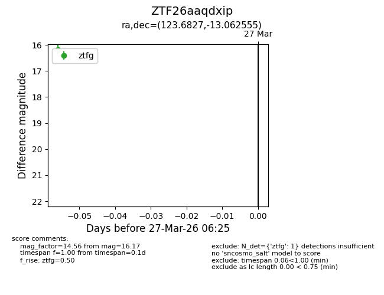
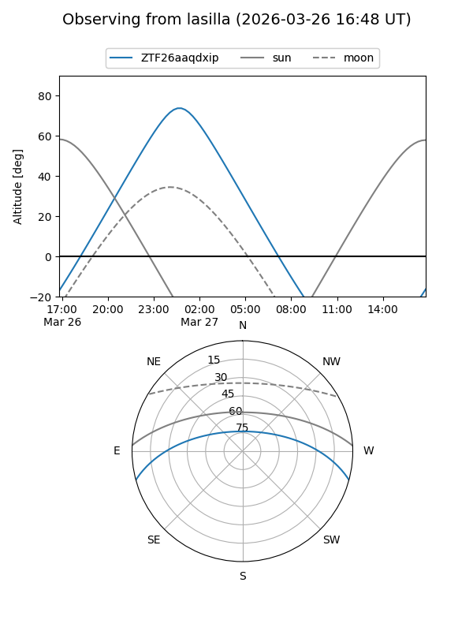
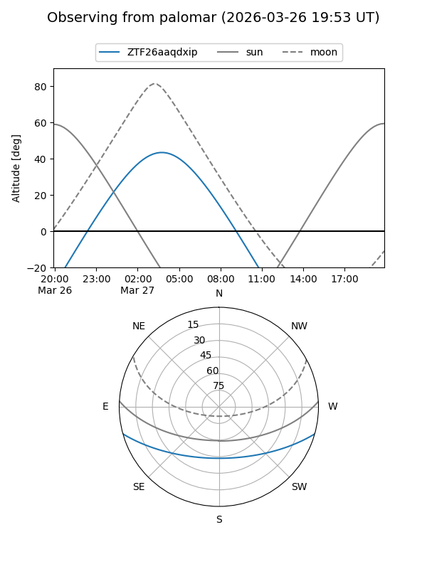

ZTF26aaqdxip
Target ZTF26aaqdxip at 2026-03-27 06:29
Aliases and brokers:
FINK: link
Lasair: link
ALeRCE: link
alt names
ZTF26aaqdxip (ztf,fink_ztf)
Coordinates:
equatorial (ra, dec) = 123.6827,-13.06255
equatorial (HMS+DMS) = 08:14:43.85,-13:03:45.20
galactic (l, b) = (234.4536,+11.83724)
Flags:
Photometry:
last ztfg=16.17
1 ztfg detections
Lightcurve

Visibility


Additional plots